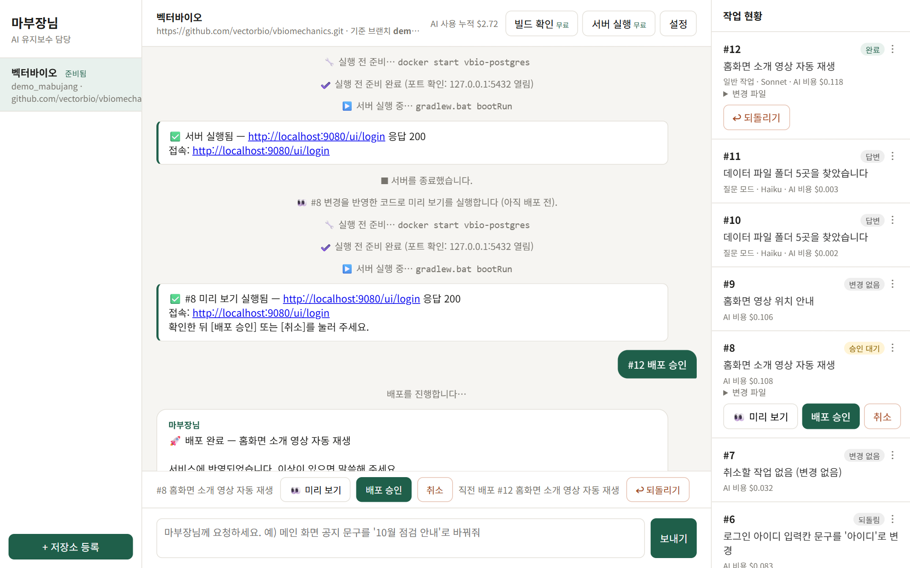
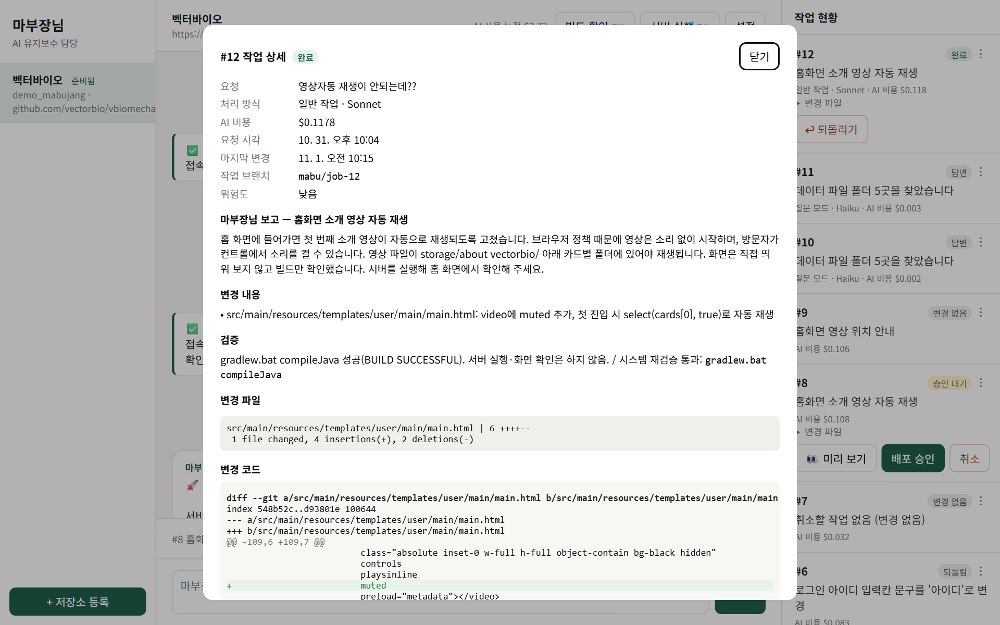
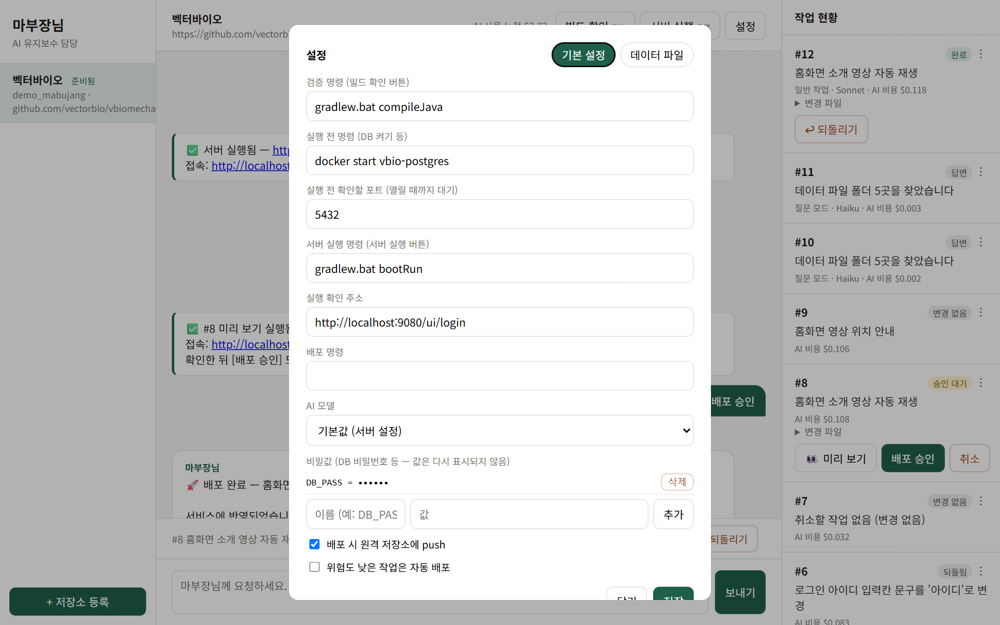
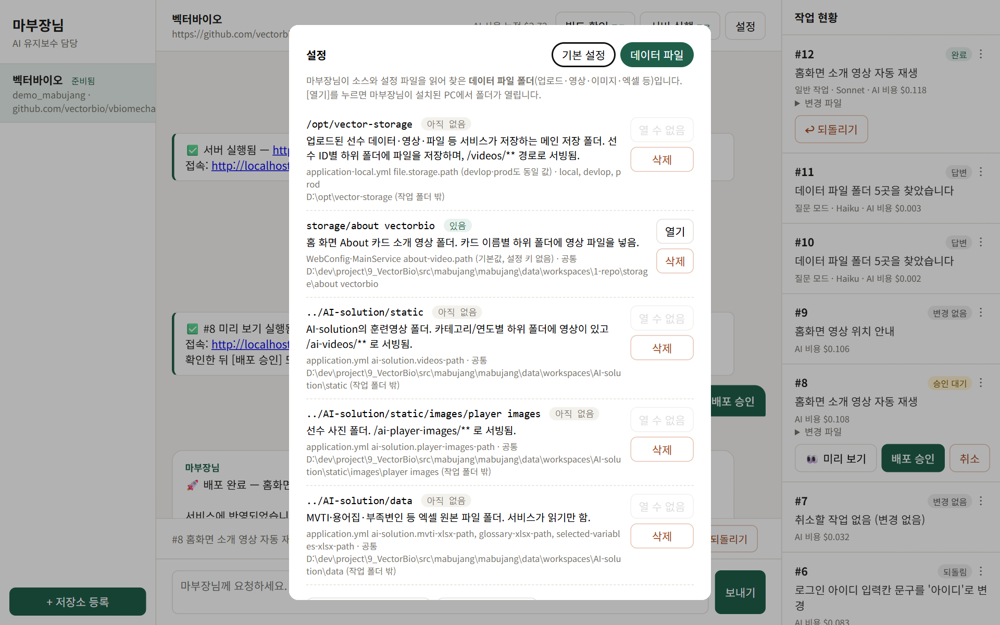
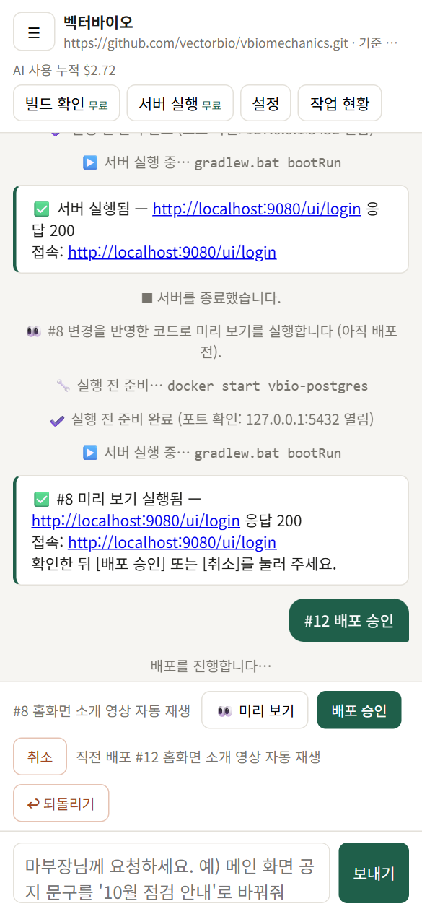

마부장AI
채팅으로 말하면 AI가 내 웹서비스를 고쳐 주는 유지보수 서비스
문제 웹서비스 소스는 있는데 개발자가 없다. 글자 하나 바꾸는 데도 외주를 맡기고 며칠을 기다린다.
해결 "로그인 화면의 ID를 '아이디'로 바꿔 줘"라고 채팅하면, AI가 고치고 검증한 뒤 관리자가 승인하면 바로 반영된다.
해결 "로그인 화면의 ID를 '아이디'로 바꿔 줘"라고 채팅하면, AI가 고치고 검증한 뒤 관리자가 승인하면 바로 반영된다.
사용 흐름
저장소 등록Git 주소를 넣는다
환경 구성AI가 소스를 내려받고 실행 방법을 익힌다
채팅 요청원하는 변경을 말로 적는다
수정·검증AI가 별도 브랜치에서 고치고 시스템이 다시 확인한다
승인·배포관리자가 미리 보고 [배포 승인]을 누른다
위험하거나 실패하면 AI가 "개발자 호출"로 넘기고, 작업 내용은 버리지 않고 보관한다.
시스템 구성도
주요 기능
💬 채팅으로 수정 요청
- 말로 요청하면 AI가 코드를 고친다
- 결과를 쉬운 한국어로 보고한다
- 최근 대화를 기억해 "더 자세히" 같은 후속 요청도 이해한다
✅ 승인 후 배포
- [미리 보기]로 바뀐 화면을 먼저 확인
- [배포 승인] → 병합 · push · 배포 명령
- [취소] 배포 전 버리기, [되돌리기] 배포 후 원래대로
▶ 버튼 작업 무료
- 빌드 · 서버 실행 · 중지를 AI 없이 처리
- 실행 전 명령(예: DB 켜기)과 포트 확인
- 실패하면 [원인 분석 요청]으로 AI에게 로그 전달
🧠 자동 분류 비용 절감
- 질문 → 가벼운 AI가 코드만 읽고 답변 (약 2원)
- 간단한 수정 → 가벼운 모델(Haiku)
- 복잡한 수정 → 기본 모델(Sonnet)
📂 데이터 파일 관리
- AI가 설정을 읽어 업로드·저장 폴더를 찾아 준다
- [폴더 열기]로 서버 PC에서 바로 열기
- 직접 등록 · 삭제 가능
📋 작업 현황
- 작업별 상태 · 처리 방식 · 비용 표시
- 상세 창에서 바뀐 코드(diff)와 배포 로그 확인
- 휴대폰 화면 지원
실제 화면





안전장치
| 위험 | 막는 방법 |
|---|---|
| AI가 잘못 고쳐서 바로 반영 | AI는 커밋·push·배포를 못 한다. 관리자 승인 후에만 시스템이 반영한다. |
| AI가 다른 폴더의 비밀 파일 열람 | 작업 폴더 밖 경로 접근을 차단한다. 인터넷 검색도 끈다. |
| 비밀번호 노출 | 비밀값은 화면에 이름만 보이고, 실행할 때 환경변수로만 전달한다. |
| 배포 후 문제 발생 | [되돌리기] 한 번으로 직전 배포를 취소한다. |
| AI가 해결 못 함 | "개발자 호출"로 알림을 보내고 작업 브랜치를 보관한다. |
비용
| 작업 | 대략 비용 (실측) |
|---|---|
| 버튼 작업 (빌드·실행) | 0원 |
| 질문 답변 | 약 $0.002 |
| 데이터 폴더 분석 | 약 $0.004 |
| 코드 수정 1건 | 약 $0.1 ~ $0.5 (요청당 상한 $1) |
기술 구성
| 서버 | Python · FastAPI · SQLite |
| AI | Claude Agent SDK(Claude Code 엔진), 분류·질문은 Anthropic SDK + Haiku |
| 화면 | HTML 한 장 (2초마다 새로고침) |
| 실행 | Windows run.bat · Linux run.sh → http://localhost:8080 |
| 첫 적용 사례 | 벡터바이오 vbiomechanics (Spring Boot · PostgreSQL) |
진행 현황
| 완료 | 전체 흐름(요청 → 수정 → 승인 → push) 실제 검증, 버튼 작업, 미리 보기, 되돌리기, 자동 분류, 데이터 파일, 모바일 화면 |
| 다음 | 실행 중인 AI 작업 중단 버튼 · 비밀값 암호화 · 외부 접속(Tailscale) · 휴대폰 파일 올리기 |
| 운영 전 | HTTPS · 로그인 강화 · 서버 격리(컨테이너) · Linux 서비스 등록 |